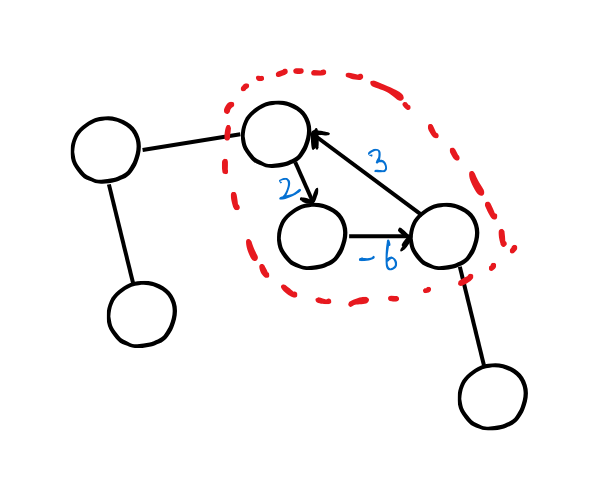

Problem Statement: Given a weighted graph G and source vertex s, what are the shortest paths from s to all other vertices of G? One example of shortest single source path algorithm is Maps, getting you from one point to another in the shortest time possible of shortest distance possible. It is done by two popular algorithms:
Weighted graphs: is graph where each edge is assigned a numerical value. The edge from a node to itself is of weight 0. We generally store the weight is takes to get to a node in the node itself. Therefore initially weight of source = 0 and weight of all other nodes = infinity and then we traverse the graph and try to get weights of nodes as less as possible.
Mostly we maintain two vectors to solve this kind of problems:
When negative weights come into the picture, we have to consider negative cycles:
the above example has the potential to cause an infinite loop in your code and traversing that cycle cause a net reduction in node wieght every single time therefore it will keep on decreasing. Bellman ford algorithm has to detect cycles too therefore it has more complexity then dijkstra.
Edge relaxation: relaxing an edge means trying to improve the shortest distance to en edge.
if d[v] > d[u] + w(u,v) then update d[v] and update parent in shortest pi[v].
Repeat this until all d[v] < = d[u] + w(u,v).
This is a general bruteforce algorithm that will work for graphs without negative cycles.
If you see a directed acyclic graph (DAG) and you know it is a SSSP problem, then one pass over vertices from left to right applying edge relaxation will solve your SSSP problem.
we have two sets in this alogithm
initialize all vertices to infinity except source. Initialize source to zero. and put all of these vertices in q;
while(!q.empty())
{
ll u = EXTRACT-MIN(q);
delete u from q;
s.push_back(u);
for(auto i: adj[u])
{
relax(u,i);
}
}
this is a generic shortest path algorithm which works for negative edges too and detects negative cycles. If negative cycles are present in the graph it aborts the process.